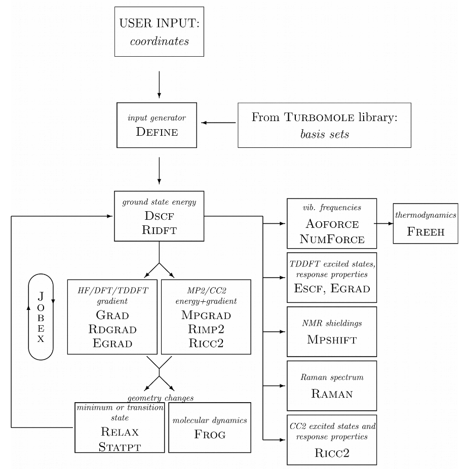
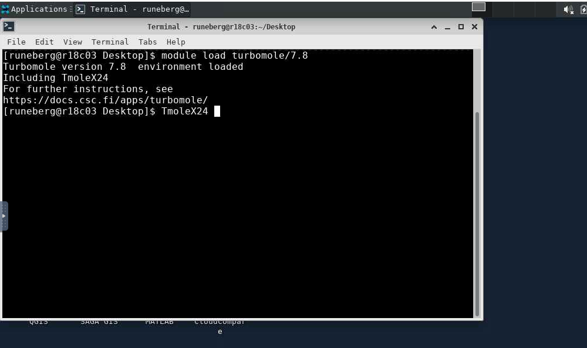
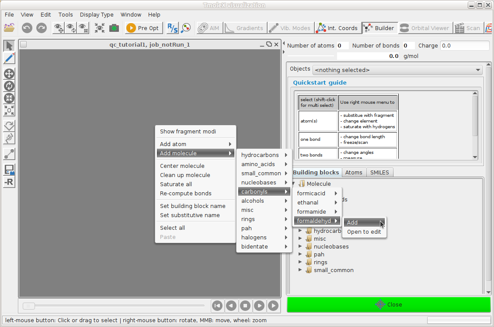
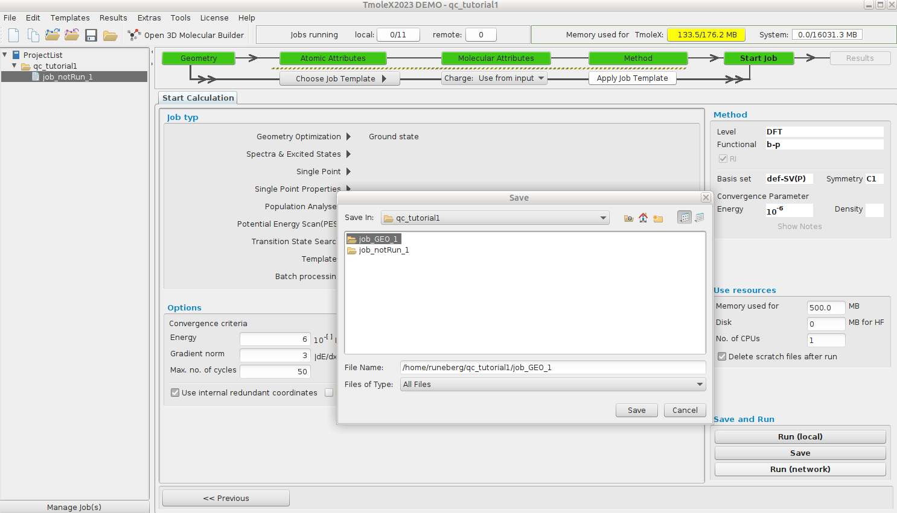
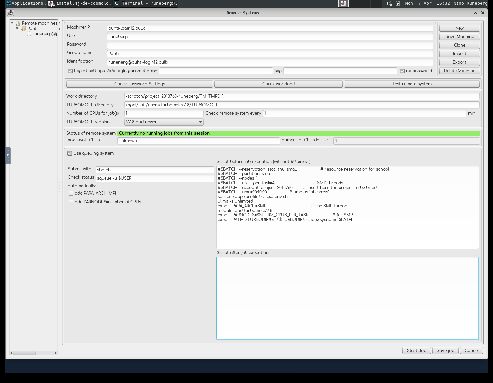

Tutorial 1: Basic DFT calculations using TmoleX and TURBOMOLE
- Spring School on Computational Chemistry 23-25 April 2025
- Nino Runeberg, CSC - IT center for Science Ltd, based on the earlier work of Atte Sillanpää
Overview
- TmoleX is a graphical user interface to set up, launch and run jobs with TURBOMOLE
- This tutorial is made for use with TmoleX 24 and TUBOMOLE 7.8
- We'll use TmoleX to set up a formaldehyde geometry optimization
- Configure and submit the job to be run on puhti.csc.fi supercomputer
- Perform a subsequent frequency calculation on the optimized structure
- Visualize results
TmoleX setup at CSC
- TmoleX can be used either via a browser or by running it on your local computer (see Preparations )
- The model system and input parameters for the TUBOMOLE job are specified using TmoleX
- A connection to puhti.csc.fi is set up in TmoleX using ssh (Only passwordless ssh allowed)
- Installation directory and supercomputer specific options are set in TmoleX so that the GUI can launch the job for the queueing system (SLURM) on the Puhti
- TmoleX can follow the progress and once the job has completed, the results are retreived
- The CSC TmoleX page has more information
- The overall CSC supercomputer environment can be found in the Docs CSC user guide or in the CSC Computing environment self learning course materials.
- TURBOMOLE can also be used directly from the Puhti command line.


The TURBOMOLE philosophy or program structure is based on running different "modules" one after another. The following diagram taken from a TURBOMOLE tutorial highlights the most typical ones and their relation.

Task 1: Optimize the ground state for formaldehyde
We need an initial guess for the geometry specifying the 3N-6 internal nuclear coordinates. This initial structure place the system on the energy surface that is uniquely defined by the computational model we are going to use (B-O approx.). The performance of the model often vary at different parts of the surface.

Launch TmoleX via your browser
Go to puhti.csc.fi using a web browser and login using your CSC/Haka user account.
- From there launch a Desktop.
- Open a
Terminaland load the TURBOMOLE modulemodule load turbomole/7.8. - Start TmoleX with the command
TmoleX24.  - Select
New Projectand define a suitable project in theFile Nameslot (e.g./scratch/project_2013760/<your-username>/qc_tutorial1).
- Define your system and type of calculation.
- Small jobs can be run interactively: Start Job -> Run (local)
- Larger jobs should be run as batch jobs: Start Job -> Run (network). Example
settings are given below. Note that passwordless connection doesn't work via
the browser. Remember to save the settings using
Save Machine.
{kind=link}

Define your first turbomole job

A complete Turbomole job comprises the sequence:
- Geometry - Atomic Attributes - Molecular Attributes - Method - Start Job - Results
Geometry -- Build formaldehyde
Open the 3D builder, right-click on canvas and load formaldehyde from the library 
{kind=link}
Close the builder and continue to Atomic Attributes
Atomic Attributes: Select basis set
Select the default def-SV(P) basis set
{kind=link}
Continue to Molecular Attributes
Molecular Attributes -- Generate initial guess MOs
Generate initial MOs by doing an extended Hückel calculation
{kind=link}
Continue to Method
Method -- Define your method
Select the default method (ri-dft BP86/m3)
{kind=link}
Continue to Start Job
Start Job -- Define your job type
We want to do a geometry optimization of the ground state.
{kind=link}
Smaller jobs can be run directly, Run (local), but for larger jobs we should reserve
resourses via the queuing system. Continue to Run (network)
Run(network) -- Setup remote job
Click Save as the first dialog prompts for the folder to use for the job files. 
{kind=link}
In the new dialog, we define the remote (Puhti) configuration:
- Which user account and project to use
- Where TURBOMOLE is installed etc.
- What type of resources we want to use for this job
TURBOMOLE can be run in parallel either via a shared memory approach (SMP, only within a single node) or by using MPI parallelization (possible to run a job over several nodes). In this tutorial we will use the SMP version.
Smaller jobs can be run directly (Run (local)), but for larger jobs we should reserve
resourses via the queuing system.

{kind=link}
Tip
You can use the Desktop Clipboard to easily copy content between the notes and the Desktop environment.
- The Machine is called
puhti-login12.bullx Useris your CSC username,Group nameandIdentificationare just tags you can set to distinguish different configurations- Tick
Expert settingsandno password.- Check that the access works by clicking
Check Password Settings
- Check that the access works by clicking
- Work directory is a place where temporary files are stored:
/scratch/project_2013760/<your-username>/TM_TMPDIR - TURBOMOLE directory should point to were it's installed:
/appl/soft/chem/turbomole/7.8/TURBOMOLE - Tick
Use queuing system - Submit with
sbatchand Check status withsqueue -u $USER - Untick
add PARA_ARCHandadd PARNODES - In the field "Script before job execution" add:
#SBATCH --reservation=sscc_thu_small # resource reservation for school
#SBATCH --partition=small # queue
#SBATCH --nodes=1 # for SMP only 1 is possible
#SBATCH --cpus-per-task=4 # SMP threads
#SBATCH --account=project_2013760 # insert here the project to be billed
#SBATCH --time=00:30:00 # time as `hh:mm:ss`
source /appl/profile/zz-csc-env.sh
ulimit -s unlimited
export PARA_ARCH=SMP # use SMP threads
module load turbomole/7.8
export PARNODES=$SLURM_CPUS_PER_TASK # for SMP
export PATH=$TURBODIR/bin/`$TURBODIR/scripts/sysname`:$PATH
Save Machine. Click Start Job* at the bottom right
- For this tutorial, the default 1 minute interval to ping Puhti for the job status is ok, but for actual production jobs, that could be increased to e.g. 1 hour. The status can always be refreshed manually. This job should finish in seconds.

Results -- structure
The geometry optimization needed 5 cycles to reach the stationary point on the energy surface.
{kind=link}
Results -- Gradients
The length of the arrows show how steep the energy surface is in that direction
{kind=link}
At the end of the geometry optimization we have reached a stationary point (gradient smaller than a given threshold) that could correspond to:

- a minimum A
- inflection point B
- a maximum C
The nature of the stationary point can be deduced from the curvature (Hessian). A positive curvature corresponds to a minimum, a negative to a maximum.
Vibrational spectrum
In order to verify that the stationary point is a true minimum (positive curvature in all directions = real frequencies)
Start a frequency calculation (Reuse data by just hitting Start new job with current data )

In the "Job typ" list select "Spectra & Excited States --> IR & vibrational frequencies"
Select "Run (Network)" to launch the job.
From your ProjectList, you can select a job from a project to monitor its progress. You can refresh the view,
but please be patient as the data may take a moment to update.
You can also open a separate terminal in the job’s directory (right-click on the job → Open Shell) and check the
job status directly using Slurm commands, for example:
squeue -u $USER # my current running or queuing jobs
sacct # my ended jobs for the last day
sacct -X -o jobid,start,jobname,state,elapsed,alloc # last jobs with custom fields
A local terminal on Puhti also gives access to some additional tools and scripts that come with TURBOMOLE that can be nice to follow or post process the data. You can find these e.g.
module load turbomole/7.8
ls $TURBODIR/scripts/
cgnce -h # to get help on usage
actual -h
Once the job has finished we note that all calculated frequencies are real, indicating that the structure corresponds to a true minimum.

The zero Kelvin minimum energy structure in a vacuum is often the starting point in solving chemical problems. It often represents surprisingly well the molecular properties despite all the approximations made. What could you use this information for? How to validate or improve the model?
This ends the tutorial.